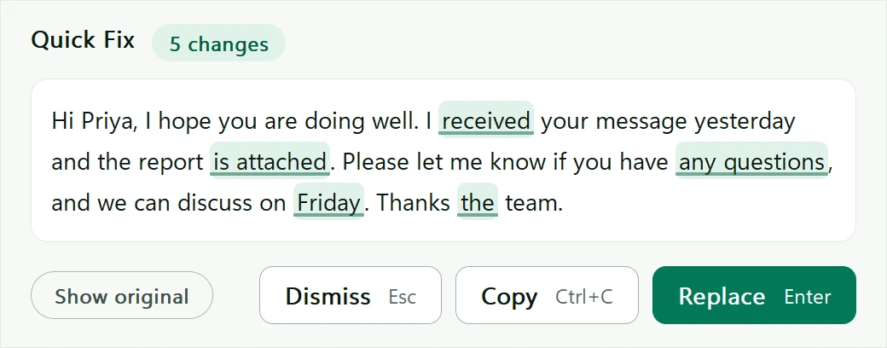

MailProfessional
"please revert back once the deployment is completed on staging"
Please reply once the deployment is completed on staging.
Free, open-source voice typing for Windows. Hold a key, speak, and clean text lands in any app. All on your PC.
Press and hold, or hold Right Ctrl on your keyboard
Clean text inserted: So the launch is moving to Thursday because the design review isn't done yet.
Illustration, not a recording.
Audio sent anywhere in the default profile.
100% local offline processing.
Free, MIT or Apache-2.0, no account.
No word cap, no sign-up.
Voice it. Everywhere.
Please reply once the deployment is completed on staging.
"please revert back once the deployment is completed on staging"
Please reply once the deployment is completed on staging.
"i will be 10 mins late stuck in traffic"
I'll be 10 mins late stuck in traffic
"update auth underscore middleware dot rs to return http 401"
Update auth_middleware.rs to return HTTP 401.
"git checkout dash b fix slash login"
git checkout -b fix/login
Beyond dictation
Select text in any app to fix spelling and grammar in place, with instant Undo or a full Review panel.

Runs on your PC. Sends nothing anywhere. Illustration, not a recording.
Shorten, warm up, or rewrite a selection — streamed live from a local writing model.
Release moves to Thursday while we finish the design review.
Runs on your PC. Sends nothing anywhere. Illustration, not a recording.
Private by design
Illustration, not a recording.
#[default] MaxPrivacyOffline,
pub fn allows_network(self) -> bool {
!matches!(self, ProcessingProfile::MaxPrivacyOffline)
}Open source
| Feature | KeyReed | Wispr Flow |
|---|---|---|
| Price | Free, unlimited | Free 2,000 words/wk; Pro $15/mo |
| Where voice is processed | On your PC by default | In Wispr's cloud |
| Works offline | Yes, once a model is installed | No, internet required |
| Source code | MIT or Apache-2.0 | Closed source |
Checked November 2026 (pricing, privacy). Not affiliated with Wispr.
Six crates, eight SHA-256-pinned speech models, zero telemetry. Audit every line or build it yourself.
FAQ
Yes. KeyReed is free and open source under MIT or Apache-2.0, with no word limit, subscription, or account. Optional cloud profiles use an API key you bring yourself at that provider's price. More in details.
Not in the default Maximum Privacy profile, which makes zero network calls for audio or text. Audio stays in RAM and is wiped after decoding. Only optional cloud profiles send data, and only with your own API key. Privacy details.
No. Speech recognition runs on your CPU via sherpa-onnx. The optional local grammar model uses a Vulkan GPU when available and falls back to CPU automatically. System requirements.
KeyReed is free, open source, Windows-only, and processes speech locally offline. Wispr Flow is a commercial cloud service on Mac, Windows, iOS, and Android with 100+ languages, Command Mode, and team compliance. See Wispr Flow comparison and details.
KeyReed's Windows builds are not code-signed yet, so SmartScreen may show an unknown-publisher prompt. Always verify the SHA-256 checksum below or build from source before running. Known limits.
English by default (Parakeet TDT 0.6B v2), 25 European languages (Parakeet v3 and Ultra), or English, Chinese, Japanese, Korean, and Cantonese (SenseVoice Small). Eight SHA-256-pinned models are selectable in Settings. Compare all 8 models.
Compare the installer SHA-256 checksum in PowerShell before running (SHA256SUMS.txt):
39ed2427e25f76715b8fe814deb289d3744dc574b51ca2cc9beb594e6655e613
Get-FileHash .\KeyReed-Setup-x64.exe -Algorithm SHA256
Portable zip SHA-256: 25ca5d85a6be560ca582c3c9a081a4c3e23ba2cbaf79f52025afd55146b5847f
KeyReed's Windows executables and installer are not code-signed yet, so Windows SmartScreen may show "Windows protected your PC". That prompt is expected for unsigned open-source builds — verify the SHA-256 hash above or build from source. First-run setup downloads the default speech model (~460 MB) once over HTTPS.